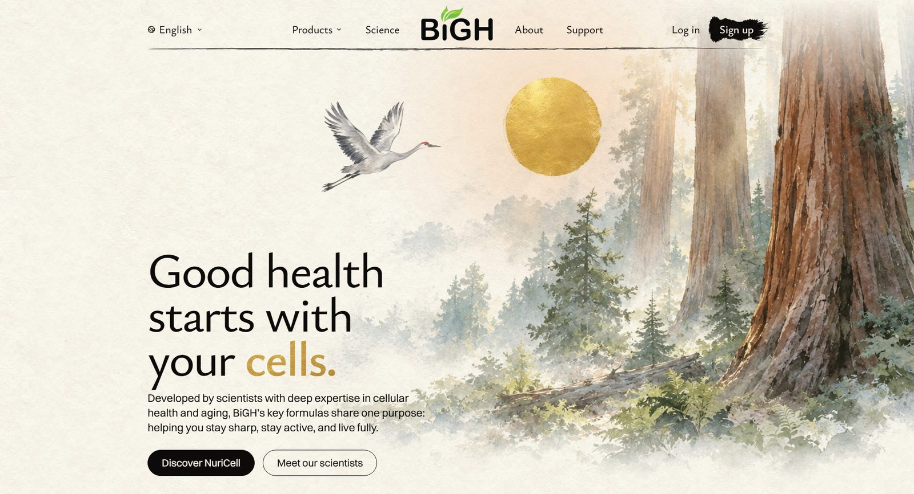
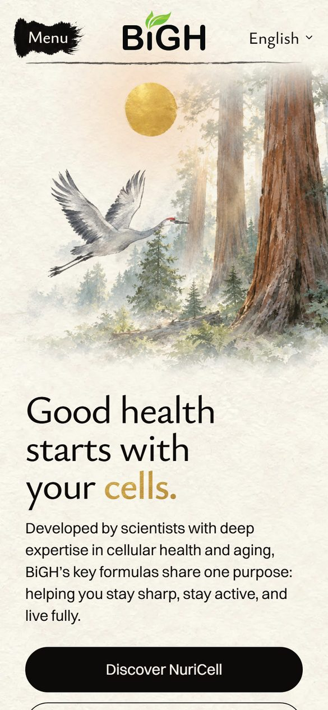
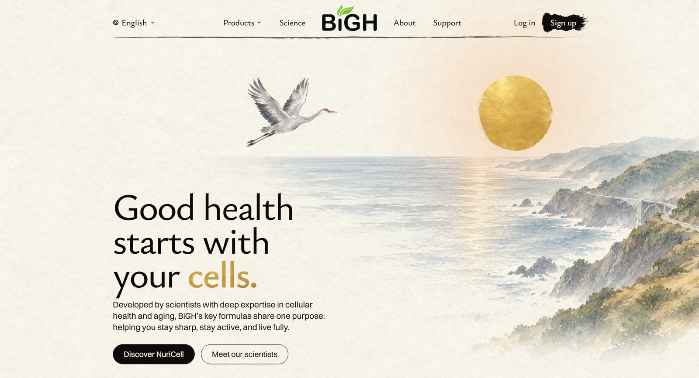
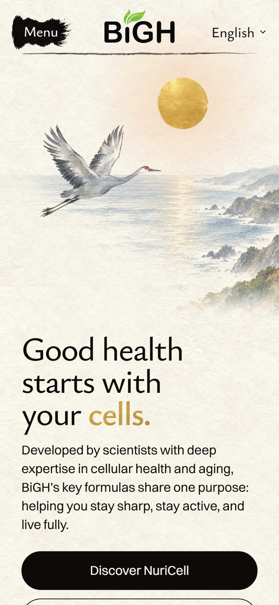
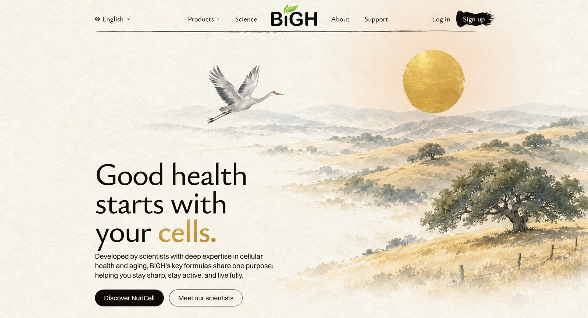
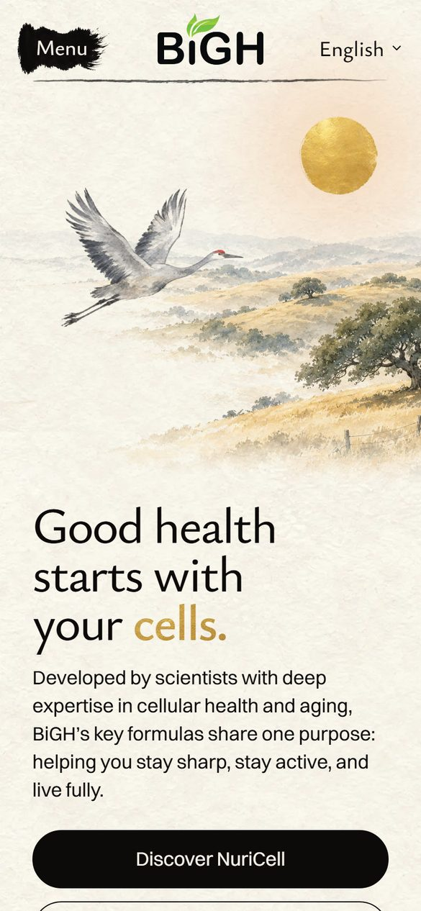
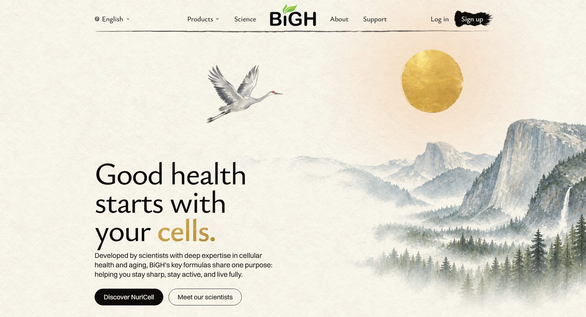
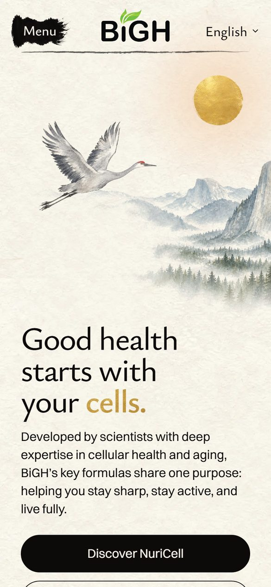
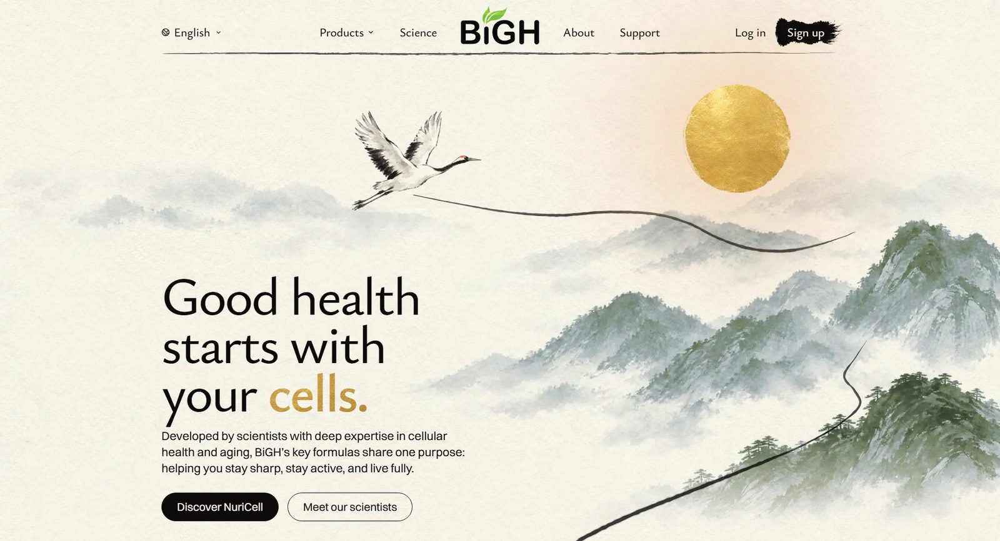

<title>California Homepage Opening</title>
<meta name="claude:viewport-fit-sides" content="cover">
<link rel="preconnect" href="https://fonts.googleapis.com">
<link rel="preconnect" href="https://fonts.gstatic.com" crossorigin>
<link rel="stylesheet" href="https://fonts.googleapis.com/css2?family=Ysabeau:wght@500;650&display=swap">
<style>
  /* Layout: one column of three scene cards on rice paper; each card = its screen on a laptop with the phone beside it. */
  :root {
    --paper: #f6f1e7;
    --sheet: #fbf8f2;
    --ink: #1d1b18;
    --ink-soft: #5d574e;
    --rule: #ddd4c4;
    --gold: #a77c25;
    --pick: #2f4a3a;
    --title: "Ysabeau", "Palatino Linotype", Palatino, Georgia, serif;
    --body: system-ui, -apple-system, "Segoe UI", Roboto, sans-serif;
  }
  @media (prefers-color-scheme: dark) {
    :root:not([data-theme="light"]) {
      --paper: #1b1a17; --sheet: #24221e; --ink: #f1ece2; --ink-soft: #b9b0a2;
      --rule: #3a3630; --gold: #d6aa52; --pick: #9cc3a8; color-scheme: dark;
    }
  }
  :root[data-theme="dark"] {
    --paper: #1b1a17; --sheet: #24221e; --ink: #f1ece2; --ink-soft: #b9b0a2;
    --rule: #3a3630; --gold: #d6aa52; --pick: #9cc3a8; color-scheme: dark;
  }
  body {
    background: var(--paper);
    color: var(--ink);
    font: 17px/1.55 var(--body);
    padding-left: max(16px, env(safe-area-inset-left, 0px));
    padding-right: max(16px, env(safe-area-inset-right, 0px));
  }
  main { max-width: 1180px; margin: 0 auto; padding-block: 40px 72px; display: grid; gap: 56px; }
  h1, h2 { font-family: var(--title); font-weight: 650; text-wrap: balance; margin: 0; letter-spacing: -0.01em; }
  h1 { font-size: clamp(34px, 6vw, 54px); line-height: 1.05; }
  h2 { font-size: clamp(26px, 4vw, 36px); line-height: 1.1; }
  p { margin: 0; max-width: 62ch; }
  .intro { display: grid; gap: 14px; }
  .intro p { color: var(--ink-soft); font-size: 18px; }
  .same { display: grid; gap: 6px; padding: 0; margin: 4px 0 0; list-style: none; color: var(--ink-soft); }
  .same li::before { content: "·"; color: var(--gold); font-weight: 700; margin-right: 8px; }
  .scene { display: grid; gap: 18px; padding-top: 28px; border-top: 1px solid var(--rule); }
  .head { display: flex; flex-wrap: wrap; align-items: baseline; gap: 10px 16px; }
  .letter { font-family: var(--title); font-size: clamp(44px, 7vw, 64px); line-height: 0.8; color: var(--gold); font-weight: 650; }
  .score { font: 600 15px/1 var(--body); font-variant-numeric: tabular-nums; padding: 7px 11px; border: 1px solid var(--rule); border-radius: 999px; color: var(--ink-soft); }
  .tag { font: 600 13px/1 var(--body); letter-spacing: 0.06em; text-transform: uppercase; color: var(--paper); background: var(--pick); padding: 7px 10px; border-radius: 999px; }
  .what { font-size: 18px; }
  .shots { display: grid; grid-template-columns: minmax(0, 3.1fr) minmax(0, 1fr); gap: 16px; align-items: start; }
  figure { margin: 0; display: grid; gap: 6px; min-width: 0; }
  figure img { display: block; width: 100%; height: auto; border-radius: 6px; border: 1px solid var(--rule); background: var(--sheet); }
  figcaption { font-size: 13px; color: var(--ink-soft); letter-spacing: 0.02em; }
  .notes { display: grid; grid-template-columns: repeat(2, minmax(0, 1fr)); gap: 12px 28px; }
  .notes div { display: grid; gap: 2px; min-width: 0; }
  .notes b { font: 600 13px/1.4 var(--body); letter-spacing: 0.06em; text-transform: uppercase; color: var(--ink-soft); }
  .now .shots { grid-template-columns: minmax(0, 2fr) minmax(0, 0.65fr); max-width: 760px; }
  .later { display: grid; gap: 8px; padding: 22px; border-radius: 8px; background: var(--sheet); border: 1px solid var(--rule); }
  .later p { color: var(--ink-soft); }
  @media (max-width: 720px) {
    body { font-size: 16px; }
    main { gap: 44px; padding-block: 24px 56px; }
    .shots, .now .shots { grid-template-columns: minmax(0, 1fr) minmax(0, 0.42fr); gap: 10px; }
    .notes { grid-template-columns: minmax(0, 1fr); }
  }
</style>

<main>
  <header class="intro">
    <h1>A California first screen</h1>
    <p>New places for the homepage's opening, laid on the real page. Your pick, D, comes first; the three earlier scenes follow. Nothing on the live site has changed.</p>
    <ul class="same">
      <li>Kept: the gold sun, the watercolour, the words and the layout.</li>
      <li>New in all four: a sandhill crane, an American crane with a red cap that spends the winter in California's Central Valley.</li>
      <li>Left out for now: the brush line. It would be drawn again to fit the chosen scene.</li>
    </ul>
  </header>

  <section class="scene" aria-labelledby="d-name">
    <div class="head">
      <span class="letter">D</span>
      <h2 id="d-name">Giant sequoias in the morning</h2>
      <span class="score">9 / 10</span>
      <span class="tag">Your pick</span>
    </div>
    <p class="what">The morning sun shines into a grove of giant sequoias, trees that live more than 3,000 years.</p>
    <div class="shots">
      <figure><figcaption>Desktop, 1920 wide</figcaption></figure>
      <figure><figcaption>Phone</figcaption></figure>
    </div>
    <div class="notes">
      <div><b>How it ties to the words</b><p>Long life: some of the oldest living things on earth. Energy starting, not ending: a morning sun, in the same gold as "cells."</p></div>
      <div><b>What holds it back</b><p>It is painted with more detail than the rest of the site. The sun moves a little left, into the open light beside the trees. Sandhill cranes winter in the valley below, not in the groves.</p></div>
    </div>
  </section>

  <section class="scene" aria-labelledby="a-name">
    <div class="head">
      <span class="letter">A</span>
      <h2 id="a-name">Big Sur sunset</h2>
      <span class="score">8.5 / 10</span>
    </div>
    <p class="what">The sun sets over the Pacific and lays a gold path on the water. Highway 1 and its arch bridge run along the cliffs.</p>
    <div class="shots">
      <figure><figcaption>Desktop, 1920 wide</figcaption></figure>
      <figure><figcaption>Phone</figcaption></figure>
    </div>
    <div class="notes">
      <div><b>Why it works</b><p>Only the West Coast sees the sun set into the sea. Nobody reads it as China.</p></div>
      <div><b>What holds it back</b><p>A sun low over the Pacific is always setting, which can read as "the end of the day" for a brand about aging. Sandhill cranes live inland, not on the coast.</p></div>
    </div>
  </section>

  <section class="scene" aria-labelledby="b-name">
    <div class="head">
      <span class="letter">B</span>
      <h2 id="b-name">Golden hills</h2>
      <span class="score">8.5 / 10</span>
    </div>
    <p class="what">"The Golden State": low summer hills, a big valley oak and a ranch fence under the sun.</p>
    <div class="shots">
      <figure><figcaption>Desktop, 1920 wide</figcaption></figure>
      <figure><figcaption>Phone</figcaption></figure>
    </div>
    <div class="notes">
      <div><b>Why it works</b><p>The softest and calmest of the three, and plainly California.</p></div>
      <div><b>What holds it back</b><p>Both About test openings are golden hills too, so the two pages would look alike.</p></div>
    </div>
  </section>

  <section class="scene" aria-labelledby="c-name">
    <div class="head">
      <span class="letter">C</span>
      <h2 id="c-name">Yosemite</h2>
      <span class="score">7.5 / 10</span>
    </div>
    <p class="what">El Capitan, Half Dome under the sun, a waterfall and morning mist in the valley.</p>
    <div class="shots">
      <figure><figcaption>Desktop, 1920 wide</figcaption></figure>
      <figure><figcaption>Phone</figcaption></figure>
    </div>
    <div class="notes">
      <div><b>Why it works</b><p>Americans know these two rocks at a glance.</p></div>
      <div><b>What holds it back</b><p>Misty cliffs and pine trees are the closest to today's look. On a wide screen the sun floats in empty sky.</p></div>
    </div>
  </section>

  <section class="scene now" aria-labelledby="now-name">
    <div class="head"><h2 id="now-name">Today, for comparison</h2></div>
    <div class="shots">
      <figure><figcaption>Desktop, 1920 wide</figcaption></figure>
      <figure><figcaption>Phone</figcaption></figure>
    </div>
  </section>

  <aside class="later">
    <h2>If you pick one</h2>
    <p>The painting at the bottom of the homepage has the same misty peaks and cranes, and the crane by the park sign in every footer is the old one. Both would change to match.</p>
  </aside>
</main>
